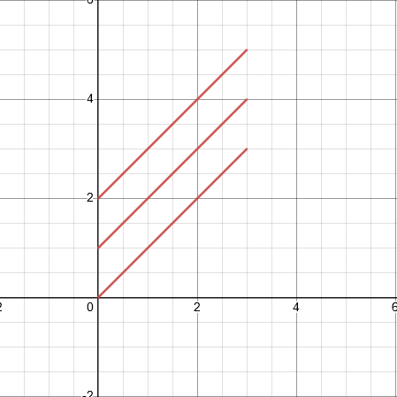
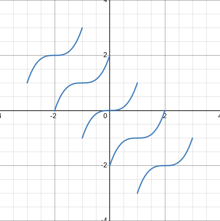
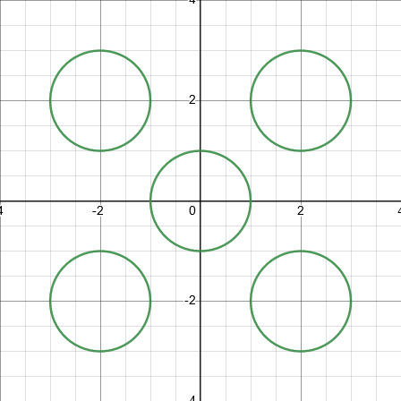
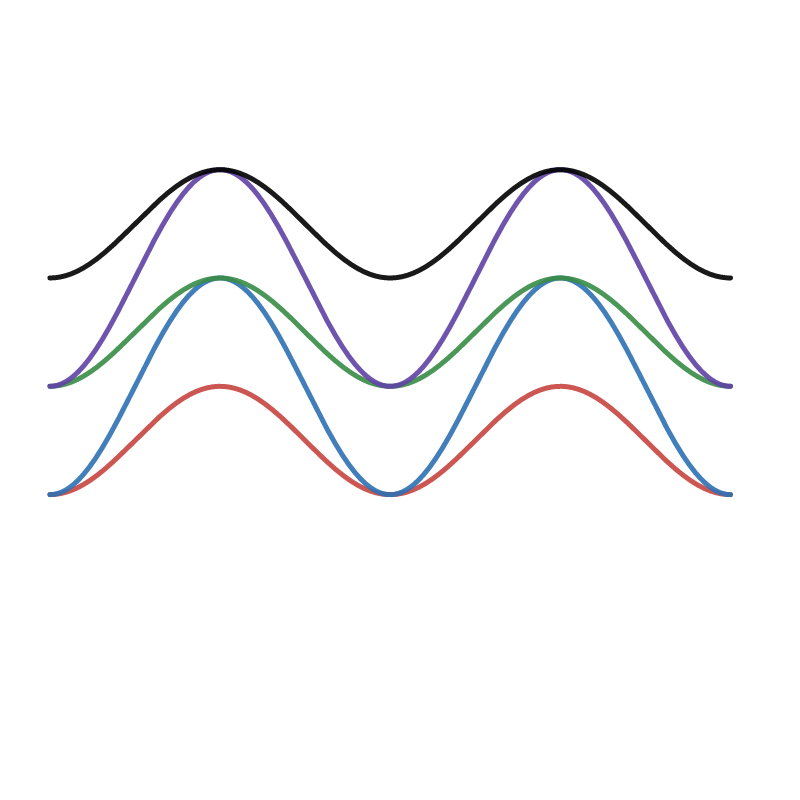
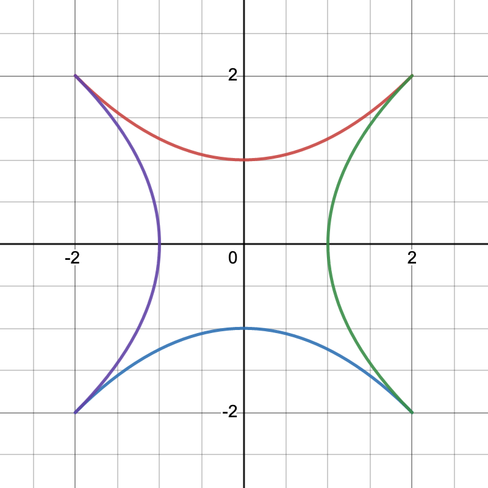
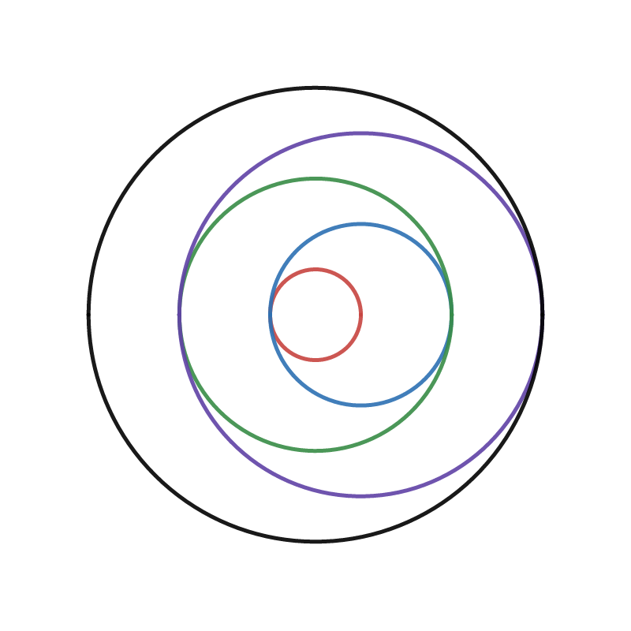

Mathematical Design, Spring 2024
Course Content
Check back often for homework assignments, tutorials, and key topics covered each day.
Homework 0:
Before class on Thursday, January 25:
- Navigate to our Microsoft Team. Before class: Introduce yourself and share a fun link in the #introductions channel.
- Get pumped to join us ON CAMPUS at 1:40pm on Thursday, January 25!
Jumping Into Mathematical Design
Thursday, January 25
In class:
- Today we are setting the stage for a thought-provoking semester.
- Discussion: What does it mean to be creative with mathematics?
- Course Expectations & Syllabus Discussion
- Group discussion and exploration.
- Discussion: What is a function?
- Introduction to Desmos
- Desmos Activity: "128 Day 01 Introduction to Desmos"
Homework:
- Thoroughly read all pages of the course webpage. This should answer all the questions that you may have about the class.
- Complete the Syllabus Quiz. Retake and resubmit the syllabus quiz until you earn a score of 100%.
- Go to our Microsoft Team.
- Introduce yourself in the Introductions channel if you didn't do that yet.
- Answer the Office Hours Poll posted in the General channel.
- Create a post in the Week 01 - Functions channel where you share an example of a function. Explain why you can be sure that every input to your function has only one output. [If you'd like some practice with functions, there is a Desmos activity called "128 Day 01: Guess my rule" that you can do and that might be helpful.
- Send me a direct message (a DM) through Teams in which you say "Hello Prof. Hanusa", includes the class you are in (MATH 128) and the name you prefer to be called. Feel free to include your preferred pronouns. Think of this as opening a dialog with me that we can continue throughout the semester when you need to get in contact with me.
- Go to Desmos and log in to our Desmos classroom.
- Complete the "128 Day 01 The (Awesome) Coordinate Plane Activity" to re-familiarize yourself with the coordinate plane. Feel free to work with another classmate or ask a question in the Desmos Help channel in Microsoft Teams.
Tuesday, January 30
In class:
- Discussion of your answers to the Function homework assignment
- Questions about Coordinate Planes?
- Discussion of plotting points
- Work through "128 Day 02 - Plotting Points". This activity discusses:
- Points
- Tables
- Connecting points
- Moving points
- Lists
- Arithmetic Sequences
- Plotting points using lists
- Work through "128 Day 02 - Points on Functions". This activity discusses:
- Defining functions
- Points on functions
- Functions and tables
- Functions and lists
- Exporting and Sharing drawings on Teams.
- If you have any questions or see something neat, ask and share with your neighbors.
- If you complete the exercises early, start being creative on desmos.com/calculator. How elaborate of a picture can you create using only dots and line segments? Can you create a picture that uses all the techniques from these activities? (Make sure you are logged in to save your work!!!!)
- Challenge Questions. Was this all easy peasy for you? Try the following...
- Challenge 2.1: Make a square.
- Challenge 2.2: Make a square where every side is a different color.
- Challenge 2.3: Make a square that has been rotated.
- Challenge 2.4: The points (4,5) and (-3,2) lie on a line. Plot exactly 9 more points on that line.
- Challenge 2.5: Plot 17 points on a circle.
- Challenge 2.6: Create a point that moves when you drag it, and when it moves it moves 9 other points simultaneously.
Homework:
- Use the techniques from the in-class activities to create a drawing in the Desmos Calculator with the following properties:
- Create some points with a table.
- Create some points with lists.
- Create some points using a function.
- Connect some of those points with line segments.
- Choose colors for your pieces intentionally.
- Be able to say why you have organized your design the way you did.
- Turn off the gridlines and axes on your picture.
- Now, you will Export and Share your drawing to our class:
- Prepare to make your post in Teams. Navigate over to the Week 02 - Starting Out Channel and click "Start a Post". You will be adding multiple items to this dialog soon.
- Go back to Desmos and find the icon with an arrow leaving a box at the top right of the page, right next to your name.
- Click on the icon to open up the "Share Your Graph" dialog.
- In the box is a URL. Copy the URL and paste it in your Teams post. (Do not submit yet!)
- Back in the "Share Your Graph" dialog in Desmos, click on "Export Image" and then "Download PNG".
- Figure out where the browser downloaded the image and upload it to the Teams post you started. (You can drag and drop or upload using the paperclip icon.)
- In the text of your Teams post, add (at least) one sentence about why you organized your design the way you did.
- Send it to the class to share it!
- Feel free to comment and/or leave emojis on other students' artwork.
Thursday, February 1
Class today will be held in the library. We will meet in Rosenthal Library Room 227 at our normal class time. This room is on Floor 2 of the Library. After you enter the library, take the main staircase one flight down, turn left, continue along the wall to your left until you find the room. Please make sure you are ON TIME!!!
In class:
- Makerspace Orientation
- AxiDraw Orientation
- Inkscape Tutorial
Homework:
- Make sure you have completed all Desmos Activities up until this point, including the Desmos Activities for "Day 01" and "Day 02".
- Before Tuesday, February 6, do some internet searching and browsing for cool things people have done with pen plotters (of which the AxiDraw is one type) and with mathematical art. Here are some places you might find inspiration:
- Explore artists who use the pen plotter: Michelle Chandra, Raphael Gadot, Julien Gachadoat, Matthew Hughes, Daniel Catt, Ruud de Rooij, Kenny Vaden, Pablo Azocar, Tom Jordan, ...
- Explore various hashtags on social media: #penplotter #axidraw #plottertwitter #mathart
- See @penplotart on Instagram for curated pen plotter art from different artists
- Visit Drawing Bots to see what other #plotterart people have programmed. https://drawingbots.net/knowledge/tools
- Explore on your own–I'd love to see what you can find. A video? An interpretive dance? ceramics? There are many ways that people can be creative with pen plotters / making / mathematical art.
- When you have found something that inspires you, post in the Week 03 - Inspiration channel on Teams
- Share the picture(s) you found.
- Share a link to the page where you found the picture(s).
- Add a sentence or two that explains why you chose those picture(s).
- Leave a comment on one or more classmates' posts that speak to you.
- Before Thursday, February 8, meet for at least one hour outside of classtime with at least one other classmate.
- Work together to make a basic drawing on paper using the AxiDraw machine. The actual drawing that you make is not important. In fact, the simpler the drawing the better for this exercise.
- Help each other to make sure each person in your group completes ALL the steps of the process individually. (This involves: Make a drawing in Desmos, Export it to an SVG file, Import the SVG file into Inkscape, Use the AxiDraw to draw it.) By the end of this process, everyone should have had practice with every step.
- If you have time left over, help each other with the other parts of this homework assignment too.
- After your meeting write one paragraph about something that you learned or experienced that you would not have if you had worked alone. Also write down the name of the person you met with and when you met!
- On Thursday, bring your drawing and paragraph to class to turn in.
Exploring Functions
Tuesday, February 6
We are back in our normal classroom, PH 212, today.
In class:
- Recap of Day 02 Activities
- Parent Functions (Desmos Notebook
- Implicit Functions (Desmos Notebook)
- Identifying parent functions
- Describing parent functions
- Work through "128 Day 04 - Polygraph: Parent Functions". This is an interactive activity with classmates. You are practicing:
- Identifying parent functions
- Using mathematical terminology to describe functions
- Interpreting your classmates' mathematical terminology
- Using logical reasoning to determine your partner's graph
Homework:
- Remember to complete the AxiDraw and Partner Paragraph assigned last week and bring them to class Thursday.
- Complete the following Desmos Graphing Practice. (Feel free to work with your classmates to each create a different scene. That can make the whole thing more fun!)
- Open a new Desmos Calculator page. (Remember to log in!)
- In the first cell of the worksheet, write your name in a "note" cell.
- Now use the tools you developed in class to create a scene with at least five different curves. Include in your scene at least a few of the following:
- A line that looks almost vertical.
- A "sideways" parabola
- A graph with a sharp corner.
- A graph with exactly four bumps.
- Steps going downward.
- A graph that has waves like the ocean but wiggles right and left instead of up and down.
- Multiple circles
- Two curves that touch each other
- Two curves that don't touch each other.
- A closed shape that is not exactly a circle.
- Share your artwork on Teams in the Week 03 - Parent Functions channel. Make sure you share both a PNG and the URL of your artwork. Add some sentences about the process. You might want to address one or more of these questions: "Was it hard? What was the most challenging part? Which curve are you most proud of? What are you excited to explore next?"
Thursday, February 8
In class:
- Identifying parent functions
- Describing parent functions
- Introducing variables
- Saving data from variables is similar to this video
- Work through "128 Day 04 - Exploring Functions with Sliders". This activity discusses:
- Plotting parent functions
- Exploring functions with sliders
- Saving data from variables
- Turning a function on its side
- Work through "128 Day 05 - Recreating Scenes". This activity involves practicing the techniques of exploring functions with sliders and saving data from variables.
- Discussion of these techniques.
Homework:
- Spend time catching up on any past homeworks or Desmos Activities you missed.
- Use the techniques from class to create a scene involving multiple variants of the same parent function.
- Open a new Desmos Calculator page. (Remember to log in!)
- In the first cell of the worksheet, write your name in a "note" cell.
- Use the tools you developed in class to create a scene with at least five different curves that are variants of the same parent function.
- Your Desmos file will have two folders.
- The first folder, named "Parent Function" will have the parent function and the variables that you introduced with sliders. The function in this folder should not be active. (In other words, it should not appear on your image.) Do not use a linear function as your parent function.
- The second folder, named "Curves" will have the saved data that you obtained to create your scene. There should be no variables/parameters besides x and y here.
- The scene should be intentionally constructed and you should be able to explain why your curves are where they are.
- Here is an example of the structure of your notebook should look like.
- Share your artwork on Teams in the Week 04 - Function Scene channel. Make sure you share both a PNG and the URL of your artwork. Add some sentences explaining the reasoning that went into choosing the final positions of your curves.
Being Intentional in Your Scenes
Tuesday, February 13
Due to the snow, class today will be held online. Join our Zoom Room at 1:40pm.
In class:
- Modifying the functions you know
- Work through "128 Day 06 - Restrictions". This activity discusses:
- Drawing only a piece of your graph
- Restricting the domain of your function
- Using sliders to choose your domain carefully
- Restricting the domain of other variables
- Work through "128 Day 06 - Translations". This activity discusses:
- Restricting the domain of your function
- Translations of explicit functions
- Translations of implicit functions
- Work through "128 Day 06 - Copies". This activity discusses:
- Using a list in place of a variable
- Using lists to modify multiple coefficients in a function simultaneously
- Being intentional about the entries of the list
- Are you looking for a challenge? Try to make the following pictures.
  
Homework:
- Make sure you have completed all Desmos Activities up until this point, including all the Desmos Activities from Day 06.
- Practice the techniques from Tuesday's activities with an eye toward creating something you might use for the first project. Do the following.
- Find a function whose graph has a shape you like.
- Restrict the domain of your function so you have a "snippet" of the graph.
- Insert h and k's into your equation(s) so that you are able to translate the "snippet" using a slider. Make sure the slider works correctly before going on to the next step.
- Use the techniques from the last homework assignment to "save the data" of your translated snippets.
- Create two lists, H and K, for the data. The list H should contain the horizontal translation data and the list K should contain the vertical translation data.
- Replace the "h and k" parameters by the "H and K" lists and all your curves will appear together.
- Here is an example of what your final notebook should contain.
- (By the way, I highly recommend working together with classmates on this task!!! It will be helpful to have input from someone else who is working on something similar, in order to ask each other questions as you go along.)
- Share your artwork on Teams in the Week 04 - Translated Snippets channel. Make sure you share both a PNG and the URL of your artwork. Add some sentences explaining what you were thinking when you chose your snippet.
Thursday, February 15
In class:
- What makes art Art?
- Elements of Art and Design
- Aesthetics of Mathematical Functions
- Crowdsourcing a list of terms that might describe a piece of art. (On Teams)
- Developing scenes that have a particular aesthetic.
- Double Diamond Design Model
- Discussion of Project 1
- Goal: Exploration through creativity to intentionality.
Homework:
- Required Readings: Read these resources about the elements of art and design:
- Understanding Line in Art
- Five Types of Line in Art
- The Seven Elements of Art.
- The Principles of Design from the Getty Museum.
- There are two tasks this weekend. Try to push yourself to expand your repertoire and the types of functions that you use.
- 1. Contribute to the Dictionary of Interesting Shapes Document posted in the "Week 04 - Artistic Terms" channel.
- Use techniques from class to create a shape/function snippet in Desmos that no one else has posted yet in the document.
- Export or take a screenshot of the shape.
- Add to the document your name, your image, your function, and some adjectives that describe the image. Feel free to add more context if you want.
- 2. Create a scene directly inspired by the list of artistic terms we crowdsourced during class.
- Work to create a scene that reflects the terms you chose. The scene should have at least five snippets and be monochromatic—every function should be the same color.
- Share your artwork on Teams in the Week 05 - Artistic Exploration channel. Make sure you share both a PNG and the URL of your artwork. Also Share the terms that influenced your work and write a sentence or two in which you assess whether you think you were successful in capturing the essence of those terms.
Focusing on Your First Project
Tuesday, February 20
In class:
- Discussion of the Project 1 Rubric
- This week and next you are going to go through the steps of the Double Diamond Design Model to create your first project.
- First, work on Discovery. Draft three different initial sketches that could form the basis for your final piece of art. You are exploring the mathematical space to see what tools speak the most to you.
- You can start these sketches on paper if you like, however it is very important that you work to translate your ideas into mathematical functions and display them in Desmos.
- You are encouraged to work with your neighbor and ask Prof. Hanusa questions about accomplishing what you want to accomplish.
- Next is Define. Decide on one of the initial sketches that you'd like to develop further.
- You're now ready to Develop. This is going to involve some prototyping. What is the best way to assemble the pieces into a scene? You should explore at least three different scenes involving the same mathematical pieces. Get some feedback from classmates, friends, and family.
- Before the next class, use the AxiDraw to print out at least three different scenes. Feel free to use different materials to realize them.
- Reserve a time in the next week to use the AxiDraw machine. Feel free to go with a classmate or two since that's more fun!
Homework:
- Complete the steps you started in class.
- Visit the Makerspace and create your three different drawings.
- Create a digital record of your visit to the Makerspace by doing one of the following things:
- Take a picture together with your classmate in the Makerspace.
- Take a selfie with the AxiDraw setup.
- Take a video of your process getting your artwork into Inkscape.
- Take a video of the AxiDraw machine in motion.
- Take a picture of the many pieces of paper you used during the trial and error phase.
- Something else creative involving the time you spent at the Makerspace.
- Post your digital record in our Microsoft Team in the Week 05 - In the Makerspace channel.
- As part of your project lab report, you will be reflecting on the creative process of coming up with the ideas from your artwork. Write at least one paragraph (5–7 sentences) about what you experienced, or what was difficult, or the process you used to complete these first steps. Save this paragraph on your own computer so that you can use it during your writeup. Then submit it as your assignment before class.
Our class does not meet on Thursday 2/22/24. Classes follow a Monday schedule. If you have a Monday class, it will meet Thursday 2/22/24.
Tuesday, February 27
In class:
- Bring your AxiDraw drawings to class. We will share and discuss these together in class.
- Discussion about grading of homework and the project.
- Together we'll watch a short video about How to critique.
- We'll discuss the Deliver phase in which your draft drawings feed into your final piece. Which of your three drawings should be honed further? Are there ideas from your six drafts that you want to make sure to include in your final piece? What technical language can you use to discuss your work and process?
- Discussion of Materials
- In-class work day
Homework:
- Finalize your scene.
- Start writing the lab report that is part of Project 1. Ideally you will have a draft of the entire report. At a bare minimum, you must have a detailed outline that contains the key points you will discuss in your report. Make sure to consult the two sections of the grading rubric: "Process Discussion in the Writeup" and "Technical Discussion in the Writeup" and ensure you address all those points. Bring your draft to class on Thursday 2/29.
- Schedule a time in the Makerspace no later than Monday 3/4 to print out two copies of your final piece.
- If you would like help with your writing, schedule a time in the Writing Center to get feedback on your writing.
Thursday, February 29
In class:
- Peer Review of your Lab Report.
- A discussion about organizing your Desmos Notebook
- In-class work day
Homework:
- Complete Project 1.
- Revise your artwork and project based on the feedback from your classmates.
- Print out TWO COPIES of your artwork in the Makerspace. Remember to sign them! Bring them both to class.
- Write your lab report. And make sure to update your essay to reflect the entire revision process.
- Organize your Desmos Notebook into folders.
- Submit your lab report and Desmos Notebook through Microsoft Teams.
- Bring into class on Tuesday 3/5 a physical copy of your final piece of art, a printout of your lab report, and a link to your Desmos file.
Dilations and Combining Functions
Tuesday, March 5
In class:
- Debriefing about Project 1.
- Troubleshooting - unplug, replug.
- Work through "128 Day 11 - Dilations". This activity discusses:
- Horizontal Dilations
- Vertical Dilations
- Combining Dilations
- Reflections
- Work through "128 Day 11 - Combining Transformations". This activity discusses:
- Combining Translations and Dilations
- Applying transformations to pieces of functions
- Using lists to create multiple transformed pieces
- Work with your classmates to recreate these images:   
Homework:
- Make sure you have completed the Desmos Activities from Day 11.
- Practice the techniques from today's activities. Do the following.
- Start with a function or implicit function you have never used before or that you want to explore further.
- Introduce sliders and restrict the domain as necessary to that you have a "snippet" of a graph that is pleasing to your eye. Once you've finalized your "snippet", make sure your equation doesn't have any variables other than y and x.
- On a new line, create a copy of your "snippet" by replacing ALL the x's by ((x-h)/b) and all the y's by ((y-k)/a) to create a fully transformable copy of this "snippet" using sliders. Make sure the sliders work correctly.
- Arrange the transformed curve with the original curve so that they align in a way you are satisfied with.
- Do this again to make a third copy of the curve.
- Do this at least one more time so that your final scene has at least four transformed copies of your original snippet on the same picture.
- Share your artwork on Teams in the Week 07 - Dilations and Translations channel. Make sure you share both a PNG and the URL of your artwork. Write a sentence or two about the artwork you created and/or the process you used to get there.
Thursday, March 7
Due to the Professor's illness, class today will be held online. Join our Zoom Room at 1:40pm.
In class:
- New Functions from Old.
- Addition and Subtraction
- Multiplication and Division
- Composition
- 1/f(x) and |f(x)|
- We'll work through this Desmos notebook
Homework:
- Practice today's techniques. Do the following.
- Start with three functions (or snippets) y=f(x), y=g(x), and y=h(x).
- Plot f(x)+g(x), f(x)+h(x), and g(x)+h(x).
- Then plot f(x)*g(x), f(x)*h(x), and g(x)*h(x).
- Find an interesting division to share.
- Find an interesting composition to share.
- Organize your functions into folders based on the types of operations you applied.
- Share your artwork on Teams in the Week 08 - New Functions From Old channel. Make sure you share both a PNG and the URL of your artwork. Write a sentence or two about how you chose which functions to work with.
Polar Curves
Tuesday, March 12
In class:
- Exploration of The Unit Circle. Pay particular attention to:
- How to convert between degrees and radians
- How an angle corresponds to a point on the circle.
- How the x-coordinate and y-coordinate change as the angle changes.
- How if we draw the behavior of the x-coordinate as a function of theta we get x=cos(θ)
- How if we draw the behavior of the y-coordinate as a function of theta we get y=sin(θ)
- Discussion of Polar Coordinates. Pay particular attention to:
- How in Cartesian Coordinates, a point is represented by a horizontal displacement x and a vertical displacement y. Every point has a unique (x,y) pair.
- How in Polar Coordinates is represented by a distance to the origin r and an angle θ.
- Every point has many (r,θ) pairs.
- Practice this together: "128 Day 13 - Polar Coordinates Practice"
- Discussion of Polar Graphs. Pay particular attention to:
- When we draw the graph of y=f(x) using Cartesian Coordinates, we change our value of x and determine how far above or below the x-axis the dot is placed based on f(x).
- When we draw the graph of r=f(θ) using Polar Coordinates, we change the value of our angle θ and determine how far in the direction of θ the dot is placed based on f(θ).
- The domain of θ matters.
- Practice this together: "128 Day 13 - Polar Graphs"
- Explore Classic Polar Equations in "128 Day 13 - Polar Equations Investigations".
Homework:
- Complete the "Know Your Unit Circle" Activity on Desmos to get practice with angles.
- Explore the world of polar functions. Create a graph of the form r=f(θ) for some function f. (This will looks something like r=θ^2 in Desmos, but don't use that function.)
- Share your most interesting creation on Teams in the Week 08 - Polar Exploration channel. Make sure you share both a PNG and the URL of your artwork. Write a sentence or two about what you are excited about exploring with this new Polar Function tool.
Thursday, March 14
In class:
- It's π Day!!!!
- Being intentional with polar graphs
- Specifying the domain of θ
- Reminder: Using variables in the domain
- Making sure the graph connects at θ=0
- The period of a function
- Creating functions with desired periods
- Combining polar functions to introduce peaks of different heights
- Using translations of θ to rotate a polar function
- Transforming r to dilate a polar function
- Practice this together: "128 Day 14 - Intentional Polar Graphs"
- Fifty Famous Curves
- Focus on: Spirals
- Focus on: Conchoids
- Focus on: Lines (!!!)
- Adding Parameters to Famous Curves
Before class:
- Use the techniques from class to intentionally build a draft artwork involving exactly two polar functions by doing the following:
- Develop a polar curve of your own choosing. You may wish to start with a curve from our Desmos Activity "Day 13 - Polar Equations Investigations" or the Fifty Famous Curves pdf.
- Next, introduce parameters to modify the shape so that it is how you want it to be.
- Then, apply some transformations to the shape, either by translating, dilating, or combining it with another function.
- Think to restrict the domain of your polar function in a thoughtful way.
- Last, Add a second, complementary curve to your image to complete the artwork. This complementary curve can either be a standard function y=f(x), an implicit function, or another polar function.
- There should only be two (carefully crafted) curves in your final image.
- Share your most interesting creation on Teams in the Week 09 - Intentional Polar channel. Make sure you share both a PNG and the URL of your artwork. Write a sentence or two about how you approached this complex and minimalist task.
- Remember: Submit your revised projects by Monday morning.
Advanced Materials
Tuesday, March 19
In class:
- Materials
- Types of Pens
- Types of Paper
- Expanding your Repertoire
- Multiple Colors
- Multiple Papers
- Layers in Inkscape
- In-class work day
- Incorporating Randomness (See here)
Homework:
- Read through the description of Project 2.
- Explore inspiration for project 2 online (tumblr, pinterest, #plottertwitter, ...) or offline (museum, visit a new neighborhood, road trip, ...). Share some inspiration in the Week 09 - Project 2 Inspiration channel on Teams.
- Start brainstorming ideas for your project. What artistic qualities do you want your project to have? What mathematical techniques do you want to master? What drawing implement do you want to use? What drawing surface do you want to use?
- If you find an exciting pen, paper, or other material that you want to share, add that to the Week 09 - Project 2 Inspiration channel on Teams.
- Make a plan about how you are going to proceed and make some doodles on paper and in Desmos.
- Before class on Tuesday, March 26, you will need to procure some interesting drawing implements and/or surfaces and try them out on the AxiDraw. You will be bringing them to class that day.
Thursday, March 21
In class:
- In-class work day
- Prof. Hanusa will come around and discuss your vision.
Homework:
- Make plenty of progress on your Desmos file. Bring it to class.
- Remember to save drafts along the way to include in your portfolio at the end of the semester.
- Procure some interesting drawing implements and/or surfaces and try them out on the AxiDraw. Bring your drafts to class on Tuesday, March 26.
- Feel free to post questions about your project, about issues you run into with Desmos or the AxiDraw in the Week 10 - Project 2 Questions.
- (You will bring in a final draft of your project on Thursday, March 28 for peer review.)
Tuesday, March 26
In class:
- In-class work day
- Prof. Hanusa will come around and chat in case you are running into difficulties.
- Remember to be saving drafts along the way to include in your portfolio at the end of the semester.
Homework:
- Complete your final draft of Project 2. Bring your artwork to class, as well as a paper copy of your writing. We will be doing a peer review in class. Everyone is expected to be attend and be on time.
- Remember to be saving drafts along the way to include in your portfolio at the end of the semester.
Thursday, March 28
In class:
- Peer Review Day. Complete the peer review and forward your responses to your partner.
- Time for project revision.
Before class:
- Take time to digest your partner's feedback on Project 2 and determine at least one way in which you could revise your work or push it to another level. Start implementing your changes.
- Complete Project 2.
- Submit Project 2 on Teams and bring a copy of your artwork and write-up to class.
Parametric Curves
Tuesday, April 2
In class:
- Bring a copy of your artwork and lab report for Project 2 to class.
- Etch-a-sketch (Video about Drawing a circle.)
- Vectors
- What are parametric functions? (f(t),g(t))
- The domain of the parameter
- Parametric functions in Desmos
- Interesting Parametric Functions
- Focus on: Circles, Lissajous Curves and Roulettes
- More Nice Parametric Functions
- Fifty Famous Curves
- Exploration of Parametric Transformations.
- Dilations and Translations of parametric functions (b•f(t)+h,a•g(t)+k)
Homework:
- Take a look at the Fifty Famous Curves, the Famous Curves Index, or More examples of parametric curves.
- Find a parametric function and put it into Desmos, choosing the domain of the parameter carefully.
- Next, introduce some parameters to move and scale your curve to your liking.
- Share your favorite curve and its modifications in the Week 11 - Parametric Curves channel on Teams. Add a sentence about what you like about the curve.
Thursday, April 4
In class:
- Exploration of Converting to Parametric Functions.
- Converting standard functions to parametric functions
- Converting polar functions to parametric functions
- Translating polar functions
- Exploration of Rotating Points in the Plane.
- Exploration of Rotating Parametric Functions in the Plane.
- Let's Practice using Parametric Curves to create:
- A half of a circle, and 3/4 of a circle.
- An ellipse that is 3 units tall and 5 units wide, centered at (-2,-3).
- A lissajous curve that is so "busy" that it fills up the whole square.
- A rotated version of a lissajous curve
- Reflect about both the x- and y-axes the curve traced out with the parametric equations (4t2,(t-1)3) for -1≤t≤1.
- Rotate the curve y=|x-2|+2 about the origin by the angle π/8.
- Create many different rotations of the curve y=|x-2|+2 about the origin to make a pattern.
- Discussion of Project 3.
Homework:
- Practice the various parametric function techniques from class. For example:
- Transforming parametric functions
- Rotating graphs of functions
- Develop a new scene involving multiple parametric functions. Share your Desmos notebook and image in the Week 12 - Parametric Scene channel on Teams.
- Think about which Makerspace machine you would like to use to complete Project 3 and how you are going to push your mathematical, programming, and artistic skills even further in this final project.
Tuesday, April 9
Class today will be held in Rosenthal Library Room 227.
In class:
- We will be meeting in the library classroom.
- Discussing pros and cons of each machine.
- We will discuss the workflow from a Desmos file to a 3D print.
- Follow along here: (Desmos Notebook)
- You will learn how to use Tinkercad to make a 3D model from your 2D image.
- Workflow details here. Remember to change the relative thickness of the lines by changing the Export Size in the Desmos Export Your Graph dialog.
- You will learn how to use Ultimaker Cura to slice your 3D model so that it is 3D printable.
- Remember to use the #QCMakers Microsoft Team for guidance. Go to "LEARNING CHANNEL" and then "LEARN GUIDES" or click here.
- Make a plan to work with classmates to create *something* 3D printed in the Makerspace together before class next Tuesday. (Make one item per group.)
Homework:
- Think about how you are going to push your mathematical, programming, and artistic skills further in Project 3.
- Read through the details about Project 3.
Thursday, April 11
Class today will be held in Powdermaker Hall Room 212.
In class:
- Parametric Equations of Lines and Line Segments
- Linear Interpolations of Standard and Polar functions (Desmos Notebook)
- Linear Interpolations of Parametric functions (Desmos Notebook)
- Example: Linear Interpolations between two curves (Desmos Notebook)
- Expanding the domain beyond [0,1]
- Groupwork: Hands-on practice with linear interpolations.
- Create a family of linear interpolations between sin(x) and cos(x) for -π/2 ≤ x ≤ π/2.
- Be creative to create a linear interpolation of polar or parametric functions. Share your favorite result in the Week 12 - Interpolation channel on Teams.
- In-class work time
Homework:
- If desired, revise Project 2 based on the feedback provided.
- Practice using your machine in the Makerspace. Be mindful to use the correct workflow! You are very highly encouraged to work with someone else who wants to use the same machine here.
- Begin by creating a very simple design in Desmos.
- Export the design to the correct file format.
- Bring the exported file to the machine in the Makerspace.
- Try to get the machine to create the desired result.
- If you are having difficulties, make sure to ask your classmates, come to office hours, or post a question on the Discussion Board.
- Take a picture of your result and process in the Week 13 - New Machine Who Dis channel on Teams and bring it to class on Tuesday.
Tuesday, April 16
In class:
- Bring your physical rendering of the very simple design to class.
- Discussion about how things went, including best practices.
- In-class work time
Before class:
- Make progress on Project 3.
- Develop, and refine the artwork that you will bring to life on the machine you would like to use.
- Start prototyping your work on the machines.
- If you are having difficulties, make sure to ask your classmates, come to office hours, or post a question on Teams.
Thursday, April 18
In class:
- In-class work time
Homework:
- Refine, and finalize the artwork that you will bring to life on the machine you would like to use.
- Complete a near-final version of your Project 3 physical object to bring to class on Thursday May 2.
Before class:
Spring Break! No class Monday April 22 through Tuesday, April 30, 2024.
Thursday, May 2
In class:
- Bring a near-final version of your Project 3 physical object to class today.
- Peer feedback
- In-class work time
Homework:
- Submit Project 3 on Teams and bring a copy of your artwork and write-up to class.
- Make sure to take a picture of your work.
Tuesday, May 7
In class:
- Discussion of your Portfolio
- In-class work time
Homework:
- Read through the details about the Portfolio Project.
- Start assembling the images that you intend to include in your portfolio. Your portfolio should include:
- Your submitted artwork for Projects 1, 2, and 3.
- Images that inspired your submitted artwork, be they earlier drafts or external images.
- Images that you developed for your projects but did not lead to the submitted artwork.
- Images that show your progress as an artist.
- Images that show your progress as a mathematician.
- Images that convey the feelings you experienced during this class.
Thursday, May 9
In class:
- Portfolio questions
- In-class work time
- Your feedback about the MATH 128 course
Homework:
- Complete your Portfolio. We will have a peer-review day on Tuesday.
Tuesday, May 14
In class:
- Your portfolio should be assembled, the writing for your reflection should be complete. Bring them both to class for peer review.
- We will also debrief about your experience this semester.
Homework:
- Revise your portfolio. Prepare to share it with the class on Thursday.
- Submit your online portfolio through Teams.
- Revise and resubmit Project 3 if desired.
Presentation Day: Thursday, May 16 1:45-3:45pm
In class:
- Project presentations!
- Notice class starts at 1:45pm sharp. Please be on time!
- Congratulations on making it to the end of the semester!!!!
After class:
- Fill out this form and give props to your favorite presentation!
- Please write A Letter to Future Students of Math 128: Mathematical Design. If you think back to the beginning of the the semester, what would have been nice to know about this class that you know now? How would you explain the class to an incoming student? What advice do you have for someone just starting in Math 128? Your letter should be two or more paragraphs long, and each paragraph should be 5–7 sentences. Perhaps your letter will be read by students the next time I teach this class!